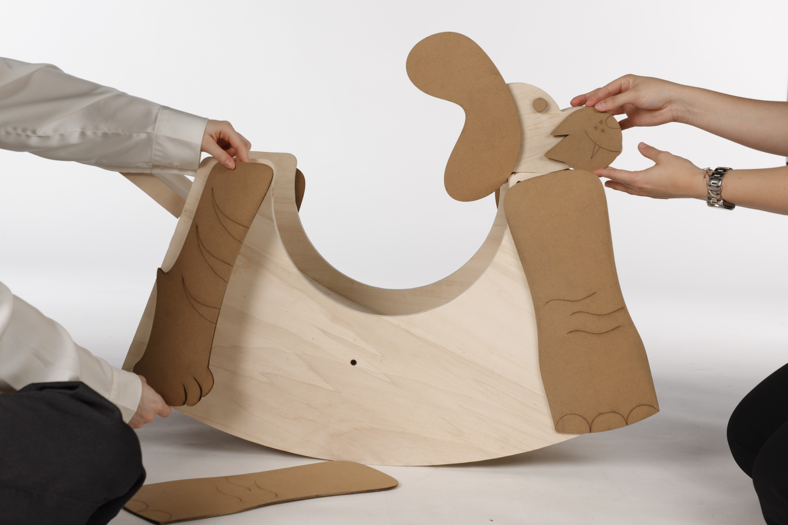

ROCK-A-ZOO
← Back to Work



Rock-a-Zoo es un proyecto colaborativo desarrollado junto a Ana Sofía Ochoa y Pablo Pesqueira. El objetivo fue diseñar un objeto pensado para niños que resultara divertido y estimulante, pero que al mismo tiempo pudiera integrarse de forma natural en espacios compartidos con adultos.
El proyecto utiliza materiales cálidos y formas orgánicas para transmitir cercanía, suavidad y seguridad. El diseño propone tres variantes iniciales de animales combinables entre sí, con la posibilidad de ampliar la colección mediante nuevos modelos, colores y configuraciones.